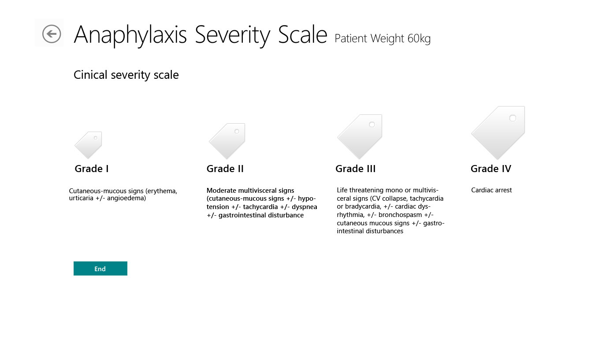

Pediatric Crisis Decision Support System — Pedi Crisis
In collaboration with Children's Hospital of Philadelphia and the Society for Pediatric Anesthesiologists, I designed a mobile cognitive aid for pediatric anesthesia emergencies, translating clinical crisis protocols into interactive treatment algorithms for iOS and Windows 8 tablets.
The Challenge
Operating room emergencies are rare, fast-moving, and high risk. In pediatric anesthesia, clinicians must diagnose, treat, and coordinate as a team while managing weight-based dosing and rapidly changing conditions. Printed references were too slow, and even experienced providers can miss steps when cognitive load spikes.
What I Designed
The system guided clinicians through a repeatable emergency workflow: select the crisis event, enter patient weight, confirm recognition criteria, follow staged treatment steps, review medication dosing, and move to a common end-of-algorithm review. The structure supported rare but life-threatening pediatric events such as anaphylaxis, bradycardia, hyperkalemia, airway fire, hypoxia, transfusion reactions, and cardiac arrest.
Key Design Decisions
- Translated paper crisis protocols into interactive algorithm flows clinicians could follow in real time
- Structured each event around the same pattern: event selection, recognition, treatment, dosing, escalation, and resolution
- Designed weight capture as a persistent system input so medication guidance stayed relevant throughout the workflow
- Used clear checklist interactions and progressive disclosure to reduce cognitive overload during emergencies
- Maintained the same clinical workflow across iOS and Windows 8 while adapting to each platform's interaction model
How the System Worked
- Converted paper checklists and treatment pathways into interactive Yes/No treatment flows
- Kept patient weight visible and editable throughout the experience so dosing stayed accurate
- Added a crisis timer to track elapsed time once an algorithm began
- Created cross-links between related algorithms for escalation and differential diagnosis
- Standardized a shared end-state screen prompting team review, therapy options, ICU transfer, consults, and procedure cancellation decisions
- Included action logs, settings, hotline information, and other support features for real-world use
Cross-Platform Design
iOS and Windows 8 required different UI conventions, but the clinical workflow had to remain consistent. I adapted the interface to each platform while preserving the same underlying algorithm structure, navigation logic, and treatment sequence. Clinicians could rely on the same mental model regardless of device.
Process and Collaboration
Algorithms were revised through ongoing collaboration with clinical stakeholders to improve symptom ordering, simplify navigation, standardize medication units, merge related pathways, and clarify escalation logic. That collaboration shaped not just the screens but the decision model itself.
Design Principle
Do not ask clinicians to remember the protocol. Put the protocol in the interface, keep it structured, and make the next step obvious.

